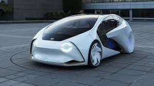

Beneficios
Mejora de la seguridad vial: Al eliminar el factor humano en la conducción, se espera que los autos autónomos reduzcan los errores humanos, que son una de las principales causas de accidentes de tráfico.
Mayor eficiencia y fluidez del tráfico: Los autos autónomos pueden comunicarse entre sí y con la infraestructura vial, lo que podría mejorar la fluidez del tráfico y reducir los embotellamientos.
Accesibilidad: Los autos autónomos podrían brindar una solución de transporte más accesible para personas con movilidad reducida o que no pueden conducir, permitiéndoles desplazarse de manera independiente.
Mayor productividad: Los ocupantes de un auto autónomo podrían utilizar el tiempo de viaje para trabajar, descansar o realizar otras actividades, lo que aumentaría la productividad y comodidad durante los desplazamientos.
Reducción del impacto ambiental: Los autos autónomos podrían estar diseñados para optimizar la eficiencia energética y reducir las emisiones, contribuyendo a la sostenibilidad y la protección del medio ambiente.
|
Algunos autos autonomos

-
Waymo (Google): Waymo es una subsidiaria de Alphabet Inc. (empresa matriz de Google) y ha desarrollado vehículos autónomos utilizando tecnología de conducción autónoma avanzada.
-
Tesla Autopilot: Tesla, liderada por Elon Musk, ha implementado su sistema Autopilot en algunos de sus vehículos, brindando capacidades de conducción autónoma en ciertas situaciones, aunque requiere supervisión humana.
-
Cruise (General Motors): Cruise es una subsidiaria de General Motors que se dedica al desarrollo de tecnologías de conducción autónoma. Han desarrollado vehículos autónomos para pruebas en carreteras reales.
-
Argo AI (Ford): Argo AI es una compañía de tecnología en la que Ford ha invertido. Están trabajando en el desarrollo de sistemas de conducción autónoma y han realizado pruebas en diversas ubicaciones.
-
NIO: NIO es una empresa china de vehículos eléctricos que ha desarrollado autos autónomos. Han lanzado el NIO Pilot, que ofrece funciones de conducción autónoma en autopistas específicas en China.
-
Mobileye (Intel): Mobileye, adquirida por Intel, se centra en el desarrollo de tecnologías de visión por computadora para vehículos autónomos. Han colaborado con varias empresas automotrices en el desarrollo de sistemas autónomos.
"El efecto Trolley": Uno de los dilemas éticos que se plantea con los autos autónomos es conocido como "el efecto trolley" o "dilema del tren". Se refiere a la situación hipotética en la que un automóvil autónomo se encuentra en una trayectoria en la que debe tomar una decisión difícil: atropellar a una persona o desviarse y poner en peligro a sus ocupantes. Este tipo de dilemas plantean cuestiones éticas y morales complejas sobre cómo los vehículos autónomos deben tomar decisiones en situaciones de emergencia.
"Vehículos autónomos de reparto": Los autos autónomos no solo están siendo desarrollados para el transporte de pasajeros, sino también para la entrega de bienes. Empresas como Amazon, FedEx y UPS están explorando el uso de vehículos autónomos para la entrega de paquetes. Estos vehículos pueden operar de manera autónoma, realizar rutas de entrega programadas y reducir la necesidad de conductores humanos. Algunos prototipos incluso están equipados con compartimentos seguros para dejar los paquetes y notificar a los destinatarios cuando se realiza la entrega.
|